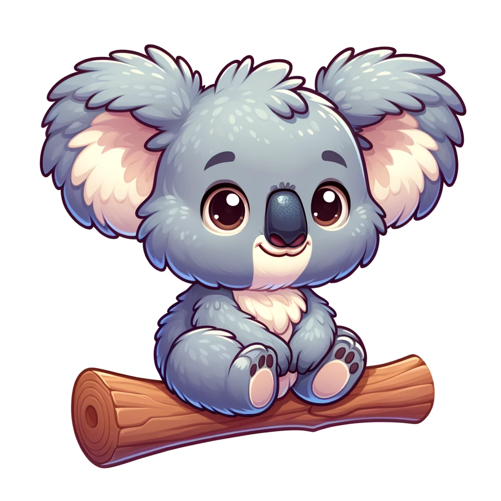

Apparence

- Le koala a un pelage gris et doux.
- Il a de grandes oreilles poilues.
- Ses yeux sont petits et brillants.
Habitat et Climat

- Le koala vit dans les forêts d'eucalyptus en Australie.
- Il aime les climats chauds et tempérés.
- Il dort dans les arbres la plupart du temps.
Alimentation

- Le koala mange des feuilles d'eucalyptus.
- Il a besoin de beaucoup de ces feuilles.
- Il ne boit presque pas d'eau.
Comportement Social
- Le koala est souvent seul.
- Il ne fait pas beaucoup de bruit.
- Parfois, il crie pour communiquer.
Fait Intéressant

- Le koala dort environ 20 heures par jour.
- C'est un marsupial, pas un ours.
- Il peut vivre jusqu'à 20 ans.
Mon dessin!!!